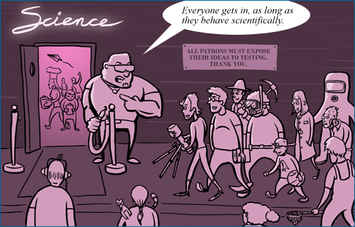

Science is sometimes misconstrued as an elite endeavor in which one has to be a member of "the club" in order to be taken seriously. That's a bit misleading. In fact, science is now open to anyone (regardless of age, gender, religious commitment, physical ability, ethnicity, country of origin, political views, nearsightedness, favorite ice cream flavor -- whatever!) and benefits tremendously from the expanding diversity of perspectives offered by its participants. However, science only works because the people involved with it behave "scientifically" -- that is, behave in ways that push science forward.

But what exactly does one have to do to behave scientifically? Here is a scientist's code of conduct:
- Pay attention to what other people have already done. Scientific knowledge is built cumulatively. If you want to discover exciting new things, you need to know what people have already discovered before you. This means that scientists study their fields extensively to understand the current state of knowledge.
- Expose your ideas to testing. Strive to describe and perform the tests that might suggest you are wrong and/or allow others to do so. This may seem like shooting yourself in the foot but is critical to the progress of science. Science aims to accurately understand the world, and if ideas are protected from testing, it's impossible to figure out if they are accurate or inaccurate!
- Assimilate the evidence. Evidence is the ultimate arbiter of scientific ideas. Scientists are not free to ignore evidence. When faced with evidence contradicting his or her idea, a scientist may suspend judgment on that idea pending more tests, may revise or reject the idea, or may consider alternate ways to explain the evidence, but ultimately, scientific ideas are sustained by evidence and cannot be propped up if the evidence tears them down.
- Openly communicate ideas and tests to others. Communication is important for many reasons. If a scientist keeps knowledge to her- or himself, others cannot build upon those ideas, double-check the work, or devise new ways to test the ideas.
- Play fair: Act with scientific integrity. Hiding evidence, selectively reporting evidence, and faking data directly thwart science's main goal -- to construct accurate knowledge about the natural world. Hence, maintaining high standards of honesty, integrity, and objectivity is critical to science.
A SCIENCE PROTOTYPE: RUTHERFORD AND THE ATOM
Ernest Rutherford and his colleagues acted in ways that moved science forward:
- They understood the relevant knowledge in their field. Rutherford had studied physics for more than 20 years when he proposed the idea of the nucleus.
- They exposed their ideas to testing. Even though his original view of the atom suggested that no backscattering should occur, Rutherford decided to look for backscattered alpha particles anyway, just to be thorough.
- They assimilated the evidence. When their experimental results did not support the "snowball" model of the atom, instead of writing those results off as an anomaly, they modified their original ideas in light of the new evidence.
- They openly communicated their ideas so that other physicists could test them as well. Rutherford published the experimental results, a description of his reasoning, and the idea of the nucleus in 1911 in a scientific journal.
- They acted with scientific integrity. In his paper on the topic, Rutherford assigned credit fairly (citing the contributions of his colleagues, Geiger and Marsden) and reported his results honestly -- even when experimental results and his theoretical calculations did not match up perfectly.
The scientists involved with this investigation lived up to the five points in the scientist's code of conduct. In this way -- and judging by the other items on the Science Checklist -- this investigation of atomic structure is well within the purview of science.